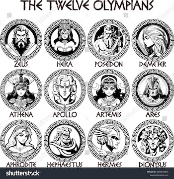

Which Greek God of Olympus Do You Most Resemble?
This is a researched interpretation of the characteristics of the Greek Gods of Olympus from Greek Mythology. This is one interpretation for fun and in no way trying to incorrectly display Helenic Paganism.

- Zeus:King of Gods and God of the sky, lightning and thunder, law and order, and justice
- Poseidon:God of the Sea
- Apollo:God of light, music and poetry, healing and prophecy
- Artemis:Goddess of the hunt and the moon
- Aphrodite:Goddess of love and beauty
- Ares:God of War
- Athena:Goddess of Wisdom, strategic warefare, intelligence, science, literature, handicrafts, and reason
- Dionysus:God of wine, viticulture ritual madness and religious ecstasy
- Demeter:Goddess of agriculture
- Hephaestus:God of fire and blacksmiths
- Hermes:God of wealth,trade,thieves, and travelers
- Hera:Queen of the Gods and Goddess of women, marriage, childbirth, and family